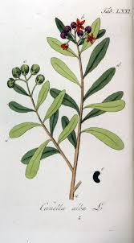

Canellaceae
Wild Cinnamon Family / Canella Family
Canellaceae is a small family of about 5-6 genera and 20-25 species of aromatic evergreen trees and shrubs. They are characterized by alternate, simple, leathery leaves without stipules, flowers with typically 3 sepals and 5-12 petals, numerous stamens fused into a tube (monadelphous), a superior ovary with parietal placentation, and berry fruits. The family has a disjunct tropical distribution and belongs to the Magnoliid order Canellales, representing an early diverging lineage of flowering plants.
Overview
The Canellaceae family, sometimes called the Wild Cinnamon family due to the aromatic bark of Canella winterana, comprises a small group of tropical trees and shrubs. A key feature is the presence of ethereal oils stored in spherical cells throughout the plant, making the bark, leaves, and flowers aromatic when crushed. These plants typically inhabit tropical forests, often preferring drier sites.
The family exhibits a striking disjunct distribution, with genera found separately in the West Indies/Florida, South America, eastern and southern Africa, and Madagascar. This pattern suggests an ancient origin, likely dating back to the fragmentation of the Gondwanan supercontinent. Florally, Canellaceae are distinctive for having numerous stamens whose filaments are fused into a prominent tube surrounding the superior ovary, which matures into a fleshy berry.
Phylogenetically, Canellaceae belongs to the order Canellales within the Magnoliid clade. Magnoliids are neither monocots nor eudicots but represent a major lineage that diverged early in angiosperm history. Canellales contains only Canellaceae and the closely related Winteraceae. Some Canellaceae species have local uses as spices, timber, or in traditional medicine.
Quick Facts
- Scientific Name: Canellaceae
- Common Name: Wild Cinnamon Family, Canella Family
- Number of Genera: Approximately 5-6
- Number of Species: Approximately 20-25
- Distribution: Disjunct tropical: West Indies/Florida, S America, E/S Africa, Madagascar.
- Evolutionary Group: Angiosperms -> Magnoliids -> Canellales
- Habit: Aromatic evergreen trees or shrubs.
Key Characteristics
Growth Form and Habit
Evergreen trees or shrubs. Plants are strongly aromatic due to ethereal oils in specialized secretory cells. Bark is often smooth and grayish.
Leaves
Leaves are arranged alternately, are simple, typically leathery (coriaceous), and usually have entire margins. They are exstipulate (lack stipules). Leaves often appear gland-dotted (pellucid dots) due to underlying oil cells.
Flowers
Flowers are borne solitary or in terminal or axillary cymes or clusters. They are bisexual, radially symmetrical (actinomorphic), often fleshy, and can be reddish, purplish, yellowish, or white. Flowers are typically 3-merous in the outer whorls.
- Sepals: 3 (rarely 2), separate or slightly fused at base, often thick and persistent.
- Petals: (4-)5-12, arranged in 1-4 whorls, separate, often fleshy or leathery.
- Stamens: Numerous (6 to many). A highly distinctive feature is that the filaments are completely fused together into a tube (monadelphous) that surrounds the ovary. The anthers are attached to the outer surface of this tube (extrorse) and open by longitudinal slits or sometimes valves.
- Ovary: Superior, composed of 2-6 fused carpels but forming a single locule with parietal placentation (ovules attached to the ovary wall, sometimes appearing basal). Ovules range from few (2) to many. A single, usually stout style sits atop the ovary, ending in stigma lobes equal in number to the carpels.
Fruits and Seeds
The fruit is a fleshy berry, containing few to many seeds. The persistent sepals often remain at the base of the berry.
Seeds are relatively large, often kidney-shaped or ovoid, with a smooth or slightly rough seed coat. They contain oily endosperm and a small embryo.
Chemical Characteristics
Rich in ethereal oils, particularly sesquiterpenoids like drimanes (also found in the related Winteraceae), which contribute to the aromatic and sometimes pungent properties. Alkaloids and tannins are also present. Some species possess wood considered primitive, lacking vessels or having scalariform vessel perforations.
Field Identification
Identifying Canellaceae requires recognizing the combination of its aromatic woody habit, leaf features, unique stamen structure, and berry fruit:
Primary Identification Features
- Habit: Aromatic tree or shrub (crush leaves or bark).
- Leaves: Alternate, simple, entire, leathery, exstipulate, often appearing gland-dotted.
- Flowers: Radially symmetric, with 3 sepals and 5-12 separate petals.
- Stamens: Numerous, with filaments conspicuously fused into a tube (monadelphous) surrounding the ovary.
- Ovary: Superior, syncarpous but 1-loculed with parietal placentation.
- Fruit: A fleshy berry.
Secondary Identification Features
- Flowers: Often reddish, purplish, or yellowish; fleshy texture common.
- Distribution: Found in specific tropical regions (West Indies/FL, S America, E/S Africa, Madagascar).
- Wood: Sometimes exhibits primitive anatomical features.
Seasonal Identification Tips
- Year-round: Aromatic nature and alternate, simple, leathery, exstipulate leaves are persistent clues.
- Flowering/Fruiting: Flowers with the unique staminal tube and the subsequent berry fruits are diagnostic when present seasonally.
Common Confusion Points
- Winteraceae: Sister family, also aromatic Magnoliids with primitive wood. Differ crucially in having separate stamens (not fused tube) and usually separate carpels (apocarpous ovary).
- Annonaceae: Magnoliids with alternate simple leaves, often aromatic. Differ in having flowers typically with parts in 3s (3 sepals, 3+3 petals), numerous separate stamens (usually), numerous separate carpels (apocarpous ovary), and fruit often an aggregate of berries or a syncarp.
- Lauraceae: Magnoliids (Laurales), aromatic trees/shrubs with alternate simple leaves. Differ in having small 3-merous flowers (usually 6 tepals, 9 stamens), a single carpel ovary, and a single drupe fruit.
- Myristicaceae (Nutmeg Family): Magnoliids, aromatic trees with alternate simple leaves. Differ in having unisexual flowers, reduced perianth, monadelphous stamens (but distinct structure), single carpel, and unique fruit (fleshy drupe splitting to show seed with aril).
The most definitive features for Canellaceae are the aromatic woody habit, alternate simple exstipulate leaves, and flowers possessing numerous stamens fused into a filament tube (monadelphy) combined with a superior, 1-loculed ovary with parietal placentation leading to a berry.
Field Guide Quick Reference
Look For:
- Aromatic tree or shrub
- Leaves alternate, simple, entire, leathery
- No stipules; often gland-dotted
- Flowers actinomorphic, 3 sepals, 5-12 petals
- Stamens numerous, filaments fused into tube
- Ovary superior, 1-loculed, parietal placentation
- Fruit a fleshy berry
Key Variations:
- Number of petals (5-12)
- Number of stamens
- Number of carpels (2-6)
- Flower color
Notable Examples
The family includes species known for aromatic bark and medicinal uses.

Canella winterana
Wild Cinnamon, Canella
A small evergreen tree native to the Caribbean region and South Florida. Its aromatic inner bark is sometimes used as a spice, similar to but distinct from true cinnamon (Lauraceae). Features include leathery, gland-dotted leaves, clusters of small red flowers with fused staminal tubes, and red berry fruits.

Warburgia salutaris
Pepper-bark Tree
An evergreen tree native to eastern and southern Africa. Highly valued in traditional medicine, leading to overharvesting and conservation concerns. The bark is aromatic and pungent. Flowers are small and greenish; fruit is a berry. Contains drimane sesquiterpenoids.

Cinnamosma species
(No common name)
A genus endemic to Madagascar. These are aromatic shrubs or small trees found in various forest types. They exhibit the characteristic family features, including monadelphous stamens and berry fruits, contributing to the unique flora of Madagascar.
Phylogeny and Classification
Canellaceae is placed in the order Canellales, which belongs to the Magnoliid clade. Magnoliids are a major group of flowering plants that diverged early in angiosperm history, distinct from monocots and eudicots. The order Canellales is small, containing only Canellaceae and its sister family, Winteraceae.
The Canellales order itself is considered sister to the order Piperales (pepper family and relatives). Together, Canellales and Piperales form a clade that is sister to the large clade containing Laurales (laurels, Calycanthaceae) and Magnoliales (magnolias, Annonaceae). This placement highlights Canellaceae as part of an ancient lineage with features considered ancestral among flowering plants, such as ethereal oil cells and relatively simple flower structures (though the fused stamens are a derived feature within the family).
The highly disjunct distribution of Canellaceae across different tropical continents strongly supports an ancient origin, likely dating back to the Gondwanan supercontinent.
Position in Plant Phylogeny
- Kingdom: Plantae
- Clade: Angiosperms (Flowering plants)
- Clade: Magnoliids
- Order: Canellales
- Family: Canellaceae
Note: Magnoliids represent an early diverging angiosperm lineage, distinct from Monocots and Eudicots.
Evolutionary Significance
Canellaceae is important for understanding:
- Early Angiosperm Evolution: As part of the Magnoliid clade and Canellales order, it provides insights into the characteristics and diversification of early flowering plants.
- Magnoliid Relationships: Helps resolve the phylogeny within the Magnoliid clade, particularly the relationship between Canellales and Piperales.
- Floral Evolution: The evolution of monadelphous stamens (fused filament tube) within an otherwise ancestrally featured group is noteworthy. The syncarpous ovary with parietal placentation also differs from the apocarpy common in many other Magnoliids.
- Biogeography: Its classic Gondwanan distribution pattern across South America, Africa, and Madagascar is strong evidence for ancient origins and continental drift's role in shaping modern plant diversity.
- Chemical Evolution: The presence of specific ethereal oils (like drimane sesquiterpenoids shared with Winteraceae) provides chemical evidence linking these families and tracing the evolution of secondary metabolites.